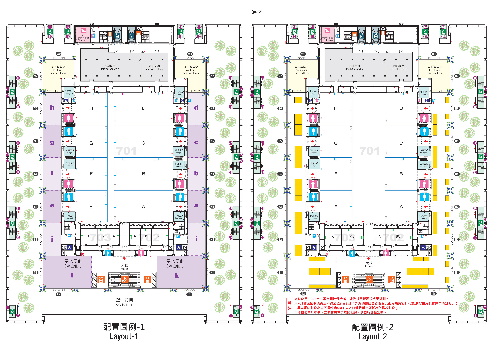

TaiNEX 2 · 7F 會議核心區
2027/04/24 - 04/25
大會堂 (Plenary Hall)
主題演講 · 閉幕典禮
701 ~ 703 會議室
CT · MRI · AI 分題演講
704 試片室
每日 07:30-17:00 繳交簡報
1F 海報展區
12:30-13:30 作者交流時段
大會核心文件與手冊專區 (Official Documents)
即時線上檢閱1、2027 AACRT 總議程表
PDF涵蓋兩日大會堂主題演講、各分題演講廳（701-703）時間配當表、口頭發表 10 分鐘響鈴規定。
1_agenda.pdf
·
820 KB
2、會場平面圖 (7F 各會議室與試片室)
高清圖檔南港 2 館 7 樓全區平面分場圖，清楚標示大會堂、701~705 各廳、試片室、電梯手扶梯動線。
2_floor_map_7f.jpg / PDF
·
支援雙指手勢縮放

南港 2 館 7 樓會場平面圖
點擊按鈕直接開啟高清地圖與縮放檢視
點擊立即開啟手勢縮放燈箱 (Pinch to Zoom)
放大檢視
3、大會手冊 (手冊指南與法規)
PDF 手冊學分認證刷卡、午餐便當與晚宴接駁、吸菸與過敏領餐規範、在台交通生活與緊急聯絡電話。
3_handbook.pdf
·
2.48 MB
大會現場服務與諮詢台
如有特殊需求或文件未列事項，歡迎前往 1 樓迎賓大廳或 7 樓大廳的「大會諮詢台」，現場志工與秘書處將提供面對面專人協助。
熱門提問 (Quick Questions)
即時統計連線中
🔥 現在進行中 (Happening Now)
4/24 10:45
測試大會現場各時段進行中狀態 (時段模擬切換)：